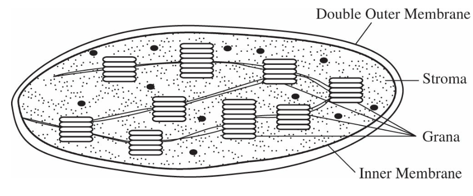
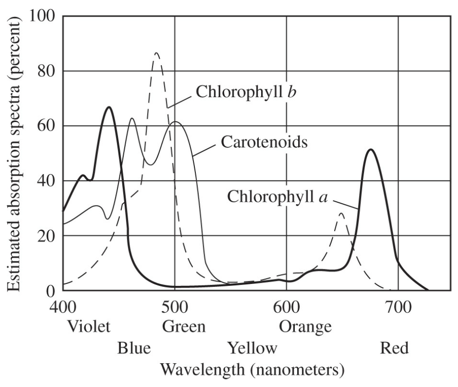
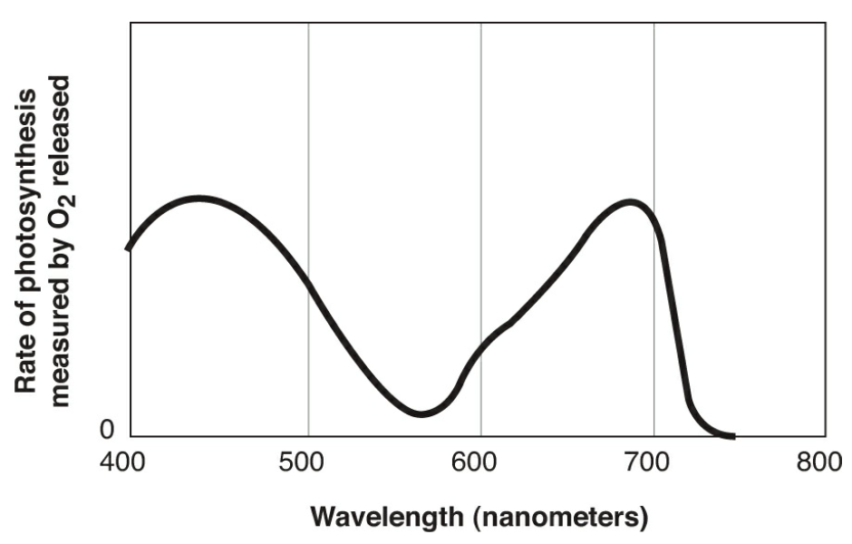
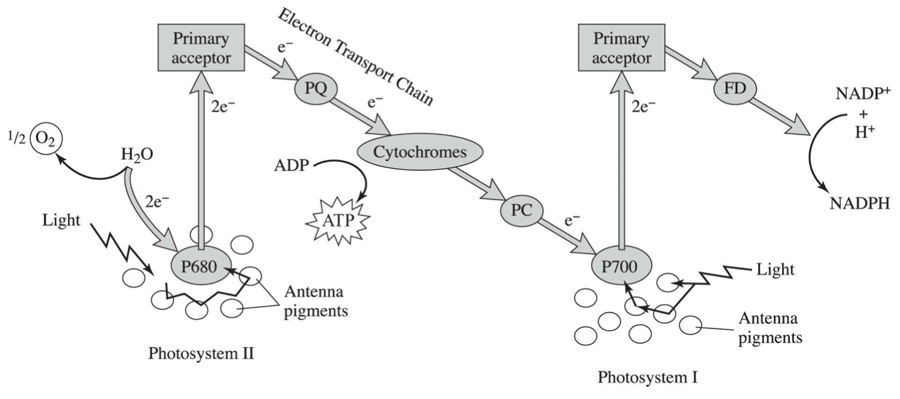
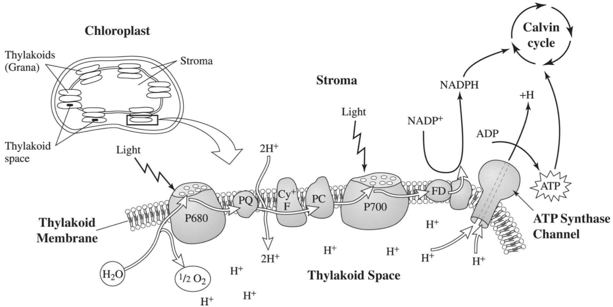
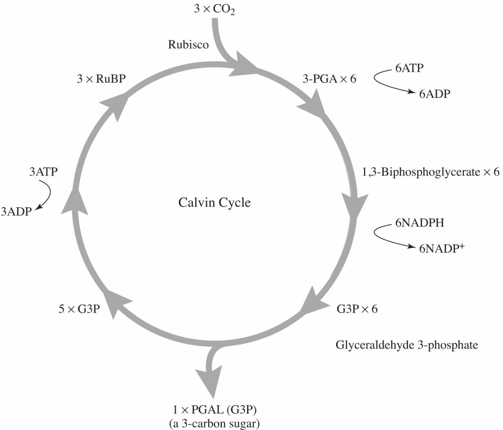
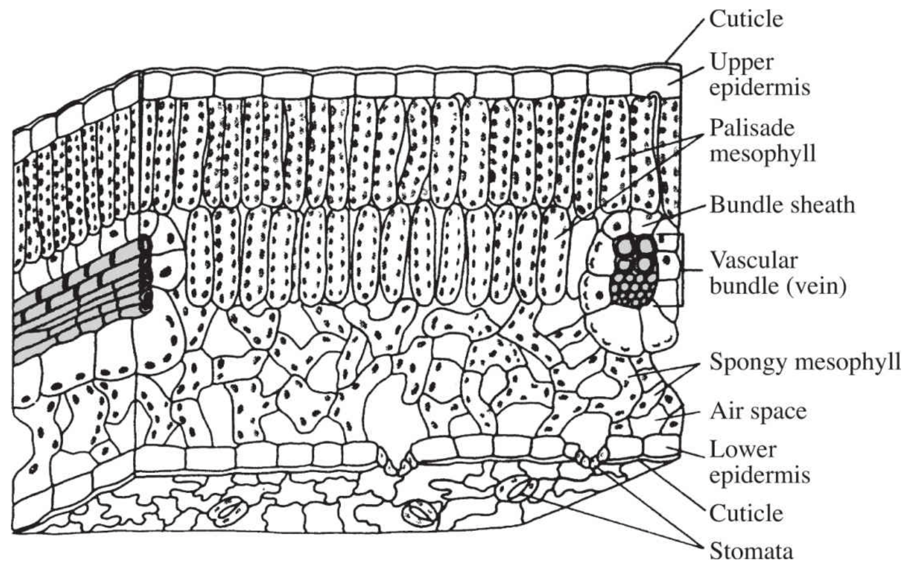

§3-subpage Photosynthesis
Chapter 7 Photosynthesis from Barron’s AP review
Formula
$$ \rm 6CO_2+6H_2O\stackrel{{light}}{\rightarrow}C_6H_{12}O_6+6O_2
$$
Chloroplast
Contains grana, where the light-dependent reactions occur, and stroma, where the light-independent reactions occur.
The grana consist of layers of membranes called thylakoids, the site of photosystems I and II.
The chloroplast is enclosed by a double membrane.

Chloroplast
Light dependent reaction
Photosynthetic pigments
Chlorophyll a, green and absorb all wavelengths of light in the red, blue, and violet ranges
Chlorophyll b, green and absorb all wavelengths of light in the red, blue, and violet ranges.
Carotenoids, yellow, orange, and red and absorb light in the blue, green, and violet ranges.
Xanthophyll, a carotenoid with slight chemical variation.
Phycobilins, found in red algae, reddish and absorb light in blue and green range.
Antenna pigments, capture light in wavelengths other than those captured by chlorophyll a, absorb photons of light and pass the energy along to chlorophyll a, includes chlorophyll b, the carotenoids, and the phycobilins.

Absorption spectrum for photosynthetic pigments extracted from a leaf

Action spectrum
Photosystems
Light-harvesting complexes in the thylakoid membranes
There are hundreds of photosystem in each thylakoid
Contains
A reaction center (containing chlorophyll a)
Hundreds of antenna pigment molecules
Two types of PS
PS I (aka P700, absorbs 700 nm light best)
PS II (aka P680, absorbs 680 nm light best)
(Ordered by the sequence of discovery)
Noncyclic photophosphorylation
Electrons from the double bonds in the head of chlorophyll a become energized and move to a higher energy level. They are captured by a primary electron acceptor.
Water is split apart in the process of photolysis, provides electrons to P680. Oxygen is released into the air.
Electrons flow in the ETC, via cytochromes, and ends up in P700. The cytochromes resembles chemiosmosis in mitochondria, and is called photophosphorylation. During the process, protons from inside the thylakoid space (lumen) (produced during photolysis) moves through the ATP synthesis channel, and produces ATPs.
PS I resembles PS II, but during the ETC of PS II NADPH is produced, not ATP.
NADP (Nicotinamide adenine dinucleotide phosphate) forms NADPH when it binds to two protons (produced during photolysis), which is turned back to NADP during the light independent reaction.

Brief summary of the noncyclic photophosphorylation light dependent reaction
$$ \rm light\rightarrow P680\rightarrow ATP\ produced\rightarrow P700\rightarrow NADPH $$

Membrane view of the noncyclic photophosphorylation light dependent reaction
Cyclic photophosphorylation
When insufficient amount of ATP is supplied to the Calvin cycle, the chloroplast carry out cyclic photophosphorylation to replenish the ATP level.
The electrons leaving PS I will reenter PS II’s ETC.

The cyclic photophosphorylation light dependent reaction
Light independent reaction
A reduction reaction (carbon gain protons and electron)
Carbon dioxide is absorbed in the process of Calvin cycle called carbon fixation.
Carbon dioxide is attached to a five carbon sugar (ribulose biphosphate (RuBP)) (catalyed by ribulose biphosphate carboxylase (rubisco)), becoming a six carbon sugar, which is broken down into two three carbon sugar (3-phosphoglycerate (3-PGA G3P)).
It does not needs light directly, but depends on the product of light reaction, which thus only performing when light exist.

The Calvin cycle
When carbon dioxide level is low, photorespiration is carried out and the products are broken down by peroxisomes.
The cell that goes through the light independent reaction mentioned above are called C-3 plant.

Cross section of C-3 Leaf
In dry environments, plants may be modified into C-4 photosynthesis. In C-4 plants, a series of steps precedes the Calvin cycle, which pump CO2 entering the leaf away from the air spaces and deep into the leaf.